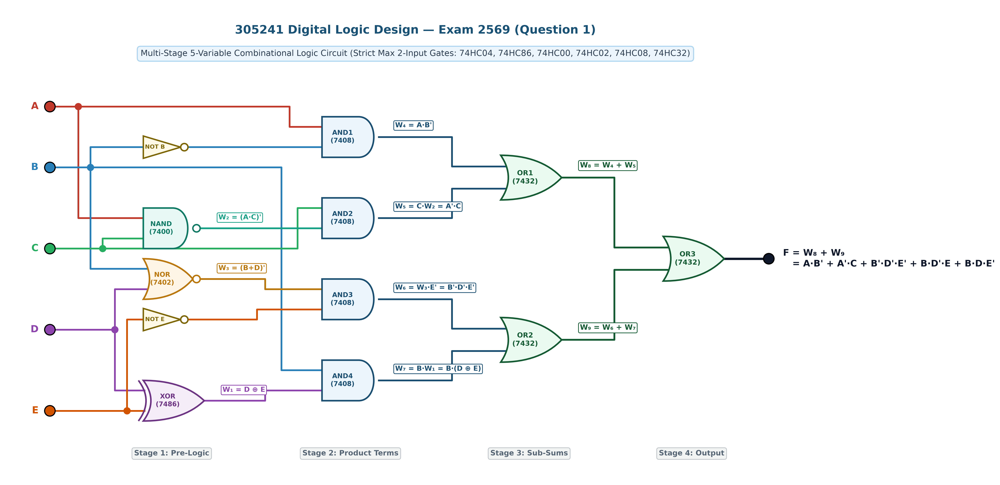
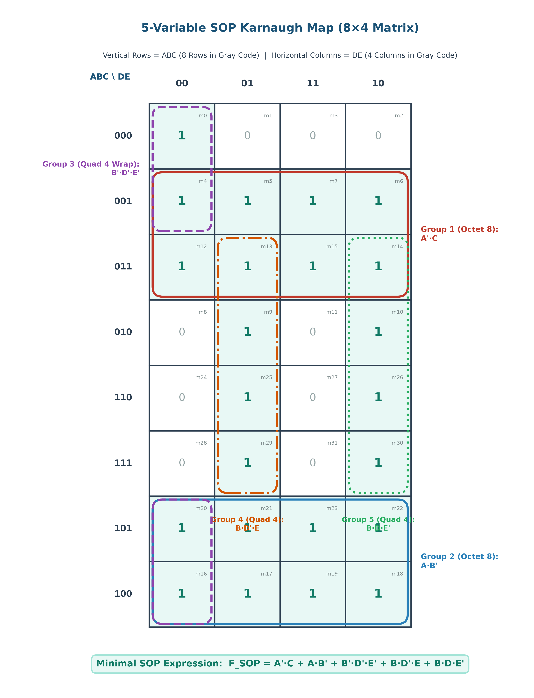
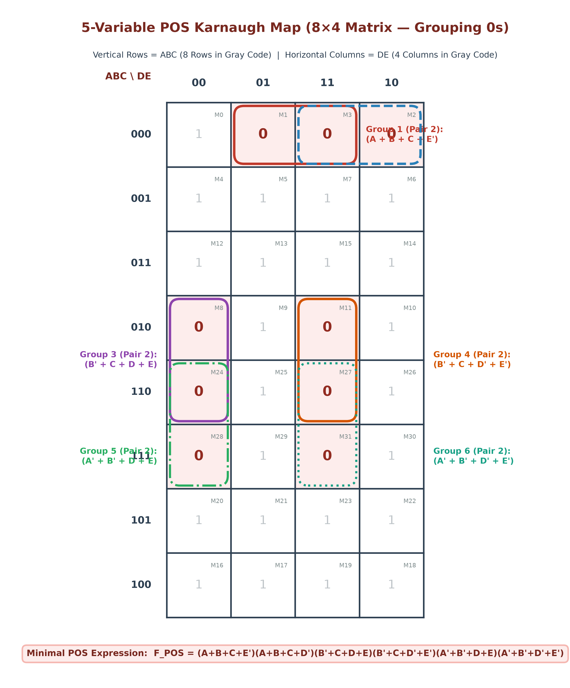
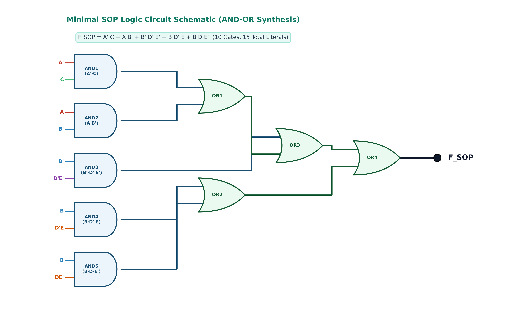
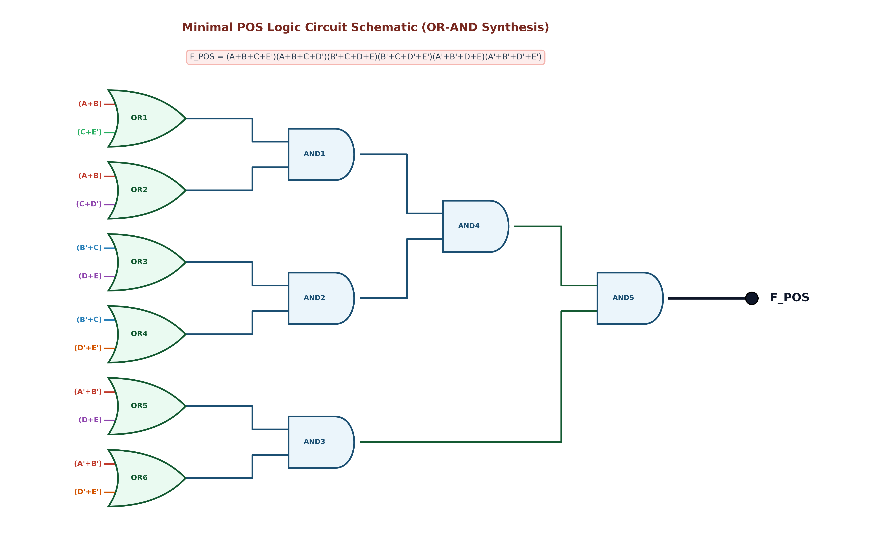
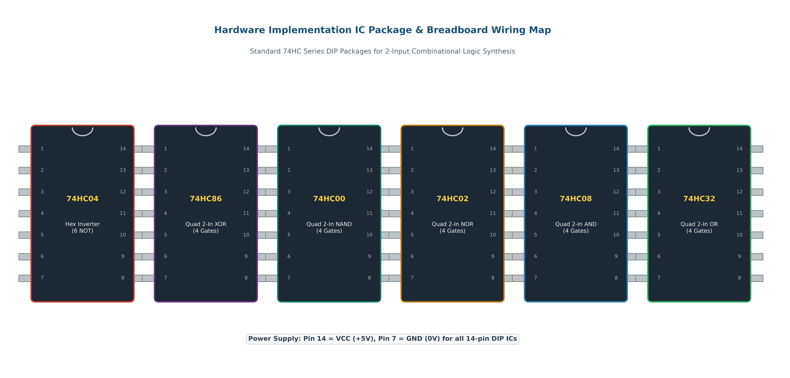

กำหนดวงจรตรรกศาสตร์ดิจิทัลแบบ 5 ตัวแปรอินพุต (A, B, C, D, E) ซึ่งออกแบบตามมาตรฐานข้อสอบจริง โดยกำหนดให้ลอจิกเกตทุกตัวในวงจรมีอินพุตไม่เกิน 2 อินพุต (Strict Max 2-Input per Gate) ต่อเรียงกันเป็นโครงข่าย 4 ภาคสัญญาณ (4-Stage Combinational Network) ประกอบด้วยไอซีมาตรฐาน 74HC04, 74HC86, 74HC00, 74HC02, 74HC08 และ 74HC32
โดยมีสมการประจำจุดทดสอบสัญญาณ (Test Points) ในแต่ละภาคดังนี้:
โครงสร้างของวงจรเชิงผสมต้นฉบับแบ่งออกเป็น 4 ภาคสัญญาณอย่างเป็นระเบียบจากซ้ายไปขวา:

| รหัสเกต | ประเภทเกต | ไอซีมาตรฐาน | อินพุตที่เชื่อมต่อ | สมการเอาต์พุตประจำจุดทดสอบ |
|---|---|---|---|---|
| NOT 1-2 | Inverter (x2) | 74HC04 (Hex Inverter) | B, E | B', E' |
| XOR | 2-Input XOR | 74HC86 (Quad 2-In XOR) | D, E | W₁ = D ⊕ E = D'·E + D·E' |
| NAND | 2-Input NAND | 74HC00 (Quad 2-In NAND) | A, C | W₂ = (A · C)' = A' + C' |
| NOR | 2-Input NOR | 74HC02 (Quad 2-In NOR) | B, D | W₃ = (B + D)' = B' · D' |
| AND1 | 2-Input AND | 74HC08 (Quad 2-In AND) | A, B' | W₄ = A · B' |
| AND2 | 2-Input AND | 74HC08 (Quad 2-In AND) | C, W₂ | W₅ = C · (A·C)' = A' · C |
| AND3 | 2-Input AND | 74HC08 (Quad 2-In AND) | W₃, E' | W₆ = (B+D)' · E' = B' · D' · E' |
| AND4 | 2-Input AND | 74HC08 (Quad 2-In AND) | B, W₁ | W₇ = B · (D ⊕ E) = B·D'·E + B·D·E' |
| OR1 | 2-Input OR | 74HC32 (Quad 2-In OR) | W₄, W₅ | W₈ = W₄ + W₅ = A·B' + A'·C |
| OR2 | 2-Input OR | 74HC32 (Quad 2-In OR) | W₆, W₇ | W₉ = W₆ + W₇ = B'·D'·E' + B·(D ⊕ E) |
| OR3 | 2-Input OR | 74HC32 (Quad 2-In OR) | W₈, W₉ | F = W₈ + W₉ |
ตารางความจริงแสดงค่าอินพุตและสัญญาณทดสอบย่อย W₁, W₂, W₃, W₄, W₅, W₆, W₇, W₈, W₉ และเอาต์พุต F ครบทั้ง 32 แถว:
| Idx | A | B | C | D | E | W₁=(D⊕E) | W₂=(AC)' | W₃=(B+D)' | W₄=AB' | W₅=A'C | W₆=B'D'E' | W₇=BW₁ | W₈=W₄+W₅ | W₉=W₆+W₇ | Output (F) | ผลลัพธ์พจน์มาตรฐาน |
|---|---|---|---|---|---|---|---|---|---|---|---|---|---|---|---|---|
| 0 | 0 | 0 | 0 | 0 | 0 | 0 | 1 | 1 | 0 | 0 | 1 | 0 | 0 | 1 | 1 | m₀ = A'B'C'D'E' |
| 1 | 0 | 0 | 0 | 0 | 1 | 1 | 1 | 1 | 0 | 0 | 0 | 0 | 0 | 0 | 0 | M₁ = (A+B+C+D+E') |
| 2 | 0 | 0 | 0 | 1 | 0 | 1 | 1 | 0 | 0 | 0 | 0 | 0 | 0 | 0 | 0 | M₂ = (A+B+C+D'+E) |
| 3 | 0 | 0 | 0 | 1 | 1 | 0 | 1 | 0 | 0 | 0 | 0 | 0 | 0 | 0 | 0 | M₃ = (A+B+C+D'+E') |
| 4 | 0 | 0 | 1 | 0 | 0 | 0 | 1 | 1 | 0 | 1 | 1 | 0 | 1 | 1 | 1 | m₄ = A'B'CD'E' |
| 5 | 0 | 0 | 1 | 0 | 1 | 1 | 1 | 1 | 0 | 1 | 0 | 0 | 1 | 0 | 1 | m₅ = A'B'CD'E |
| 6 | 0 | 0 | 1 | 1 | 0 | 1 | 1 | 0 | 0 | 1 | 0 | 0 | 1 | 0 | 1 | m₆ = A'B'CDE' |
| 7 | 0 | 0 | 1 | 1 | 1 | 0 | 1 | 0 | 0 | 1 | 0 | 0 | 1 | 0 | 1 | m₇ = A'B'CDE |
| 8 | 0 | 1 | 0 | 0 | 0 | 0 | 1 | 0 | 0 | 0 | 0 | 0 | 0 | 0 | 0 | M₈ = (A+B'+C+D+E) |
| 9 | 0 | 1 | 0 | 0 | 1 | 1 | 1 | 0 | 0 | 0 | 0 | 1 | 0 | 1 | 1 | m₉ = A'BC'D'E |
| 10 | 0 | 1 | 0 | 1 | 0 | 1 | 1 | 0 | 0 | 0 | 0 | 1 | 0 | 1 | 1 | m₁₀ = A'BC'DE' |
| 11 | 0 | 1 | 0 | 1 | 1 | 0 | 1 | 0 | 0 | 0 | 0 | 0 | 0 | 0 | 0 | M₁₁ = (A+B'+C+D'+E') |
| 12 | 0 | 1 | 1 | 0 | 0 | 0 | 1 | 0 | 0 | 1 | 0 | 0 | 1 | 0 | 1 | m₁₂ = A'BCD'E' |
| 13 | 0 | 1 | 1 | 0 | 1 | 1 | 1 | 0 | 0 | 1 | 0 | 1 | 1 | 1 | 1 | m₁₃ = A'BCD'E |
| 14 | 0 | 1 | 1 | 1 | 0 | 1 | 1 | 0 | 0 | 1 | 0 | 1 | 1 | 1 | 1 | m₁₄ = A'BCDE' |
| 15 | 0 | 1 | 1 | 1 | 1 | 0 | 1 | 0 | 0 | 1 | 0 | 0 | 1 | 0 | 1 | m₁₅ = A'BCDE |
| 16 | 1 | 0 | 0 | 0 | 0 | 0 | 1 | 1 | 1 | 0 | 1 | 0 | 1 | 1 | 1 | m₁₆ = AB'C'D'E' |
| 17 | 1 | 0 | 0 | 0 | 1 | 1 | 1 | 1 | 1 | 0 | 0 | 0 | 1 | 0 | 1 | m₁₇ = AB'C'D'E |
| 18 | 1 | 0 | 0 | 1 | 0 | 1 | 1 | 0 | 1 | 0 | 0 | 0 | 1 | 0 | 1 | m₁₈ = AB'C'DE' |
| 19 | 1 | 0 | 0 | 1 | 1 | 0 | 1 | 0 | 1 | 0 | 0 | 0 | 1 | 0 | 1 | m₁₉ = AB'C'DE |
| 20 | 1 | 0 | 1 | 0 | 0 | 0 | 0 | 1 | 1 | 0 | 1 | 0 | 1 | 1 | 1 | m₂₀ = AB'CD'E' |
| 21 | 1 | 0 | 1 | 0 | 1 | 1 | 0 | 1 | 1 | 0 | 0 | 0 | 1 | 0 | 1 | m₂₁ = AB'CD'E |
| 22 | 1 | 0 | 1 | 1 | 0 | 1 | 0 | 0 | 1 | 0 | 0 | 0 | 1 | 0 | 1 | m₂₂ = AB'CDE' |
| 23 | 1 | 0 | 1 | 1 | 1 | 0 | 0 | 0 | 1 | 0 | 0 | 0 | 1 | 0 | 1 | m₂₃ = AB'CDE |
| 24 | 1 | 1 | 0 | 0 | 0 | 0 | 1 | 0 | 0 | 0 | 0 | 0 | 0 | 0 | 0 | M₂₄ = (A'+B'+C+D+E) |
| 25 | 1 | 1 | 0 | 0 | 1 | 1 | 1 | 0 | 0 | 0 | 0 | 1 | 0 | 1 | 1 | m₂₅ = ABC'D'E |
| 26 | 1 | 1 | 0 | 1 | 0 | 1 | 1 | 0 | 0 | 0 | 0 | 1 | 0 | 1 | 1 | m₂₆ = ABC'DE' |
| 27 | 1 | 1 | 0 | 1 | 1 | 0 | 1 | 0 | 0 | 0 | 0 | 0 | 0 | 0 | 0 | M₂₇ = (A'+B'+C+D'+E') |
| 28 | 1 | 1 | 1 | 0 | 0 | 0 | 0 | 0 | 0 | 0 | 0 | 0 | 0 | 0 | 0 | M₂₈ = (A'+B'+C'+D+E) |
| 29 | 1 | 1 | 1 | 0 | 1 | 1 | 0 | 0 | 0 | 0 | 0 | 1 | 0 | 1 | 1 | m₂₉ = ABC'D'E |
| 30 | 1 | 1 | 1 | 1 | 0 | 1 | 0 | 0 | 0 | 0 | 0 | 1 | 0 | 1 | 1 | m₃₀ = ABC'DE' |
| 31 | 1 | 1 | 1 | 1 | 1 | 0 | 0 | 0 | 0 | 0 | 0 | 0 | 0 | 0 | 0 | M₃₁ = (A'+B'+C'+D'+E') |
Σm(0, 4, 5, 6, 7, 9, 10, 12, 13, 14, 15, 16, 17, 18, 19, 20, 21, 22, 23, 25, 26, 29, 30)ΠM(1, 2, 3, 8, 11, 24, 27, 28, 31)

แถว: ABC = 001, 011 (แถว 1, 2 ครบทั้ง 4 คอลัมน์)
มินเทอม: m₄, m₅, m₆, m₇, m₁₂, m₁₃, m₁₄, m₁₅
ผลลัพธ์: ตัวแปร B, D, E ถูกตัดออก เหลือพจน์ A'·C
แถว: ABC = 101, 100 (แถว 6, 7 ครบทั้ง 4 คอลัมน์)
มินเทอม: m₁₆, m₁₇, m₁₈, m₁₉, m₂₀, m₂₁, m₂₂, m₂₃
ผลลัพธ์: ตัวแปร C, D, E ถูกตัดออก เหลือพจน์ A·B'
ตำแหน่ง: คอลัมน์ DE = 00 ในแถวบนสุด (000, 001) และล่างสุด (101, 100)
มินเทอม: m₀, m₄, m₁₆, m₂₀
ผลลัพธ์: ได้พจน์ B'·D'·E'
ตำแหน่ง: คอลัมน์ DE = 01 ในแถวที่ B=1 (011, 010, 110, 111)
มินเทอม: m₉, m₁₃, m₂₅, m₂₉
ผลลัพธ์: ตัวแปร A, C ถูกตัดออก เหลือพจน์ B·D'·E
ตำแหน่ง: คอลัมน์ DE = 10 ในแถวที่ B=1 (011, 010, 110, 111)
มินเทอม: m₁₀, m₁₄, m₂₆, m₃₀
ผลลัพธ์: ตัวแปร A, C ถูกตัดออก เหลือพจน์ B·D·E'

W₁ = D ⊕ E = D'·E + D·E' | W₂ = (A·C)' = A' + C' | W₃ = (B+D)' = B'·D'W₄ = A·B' | W₅ = C·W₂ = C·(A'+C') = A'·C | W₆ = W₃·E' = B'·D'·E' | W₇ = B·W₁ = B·(D'·E + D·E')W₈ = W₄ + W₅ = A·B' + A'·C | W₉ = W₆ + W₇ = B'·D'·E' + B·(D ⊕ E)
เมื่อนำสัญญาณย่อย W₈ และ W₉ มารวมกันผ่าน OR Gate สุดท้าย จะได้สมการเอาต์พุตสมบูรณ์:
ซึ่งตรงกับผลลัพธ์ที่ได้จากการหา Prime Implicants ในตาราง K-Map 8×4 ทั้ง 5 กลุ่มอย่างสมบูรณ์แบบ 100%



| ดัชนีชี้วัด (Metrics) | วงจรต้นฉบับ 2 อินพุต (Original) | Minimal SOP (AND-OR) | Minimal POS (OR-AND) | ผู้ชนะความคุ้มค่า (Winner) |
|---|---|---|---|---|
| รูปแบบโครงสร้าง | 4-Stage Multi-Level (XOR/NAND/NOR/AND/OR) | Two-Level AND-OR (5 Product Terms) | Two-Level OR-AND (6 Sum Terms) | 🏆 SOP (5 พจน์) |
| จำนวนลอจิกเกต (Total Gates) | 12 เกต (2 NOT + 1 XOR + 1 NAND + 1 NOR + 4 AND + 3 OR) | 10 เกต (3 NOT + 5 AND + 4 OR) | 13 เกต (4 NOT + 6 OR + 5 AND) | 🏆 SOP (10 เกต) |
| จำนวนไอซี DIP-14 (IC Count) | 6 แพ็กเกจ (7404, 7486, 7400, 7402, 7408, 7432) | 3 แพ็กเกจ (7404, 7408, 7432) | 3 แพ็กเกจ (7404, 7432, 7408) | 🏆 SOP / POS (ลดลง 50%) |
| จำนวนทรานซิสเตอร์ (~CMOS) | ~54 Transistors | ~44 Transistors | ~52 Transistors | 🏆 SOP (ประหยัดสุด) |
| ความล่าช้า (Propagation Delay) | 4 Gate Delays | 3 Gate Delays | 3 Gate Delays | 🏆 SOP / POS (เร็วขึ้น 25%) |
| ความซับซ้อนของสายสัญญาณ | 24 เส้นต่อ | 15 เส้นต่อ | 18 เส้นต่อ | 🏆 SOP |